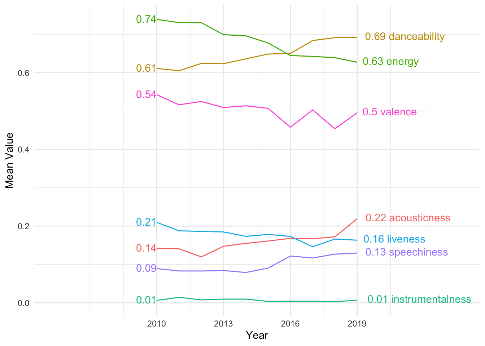
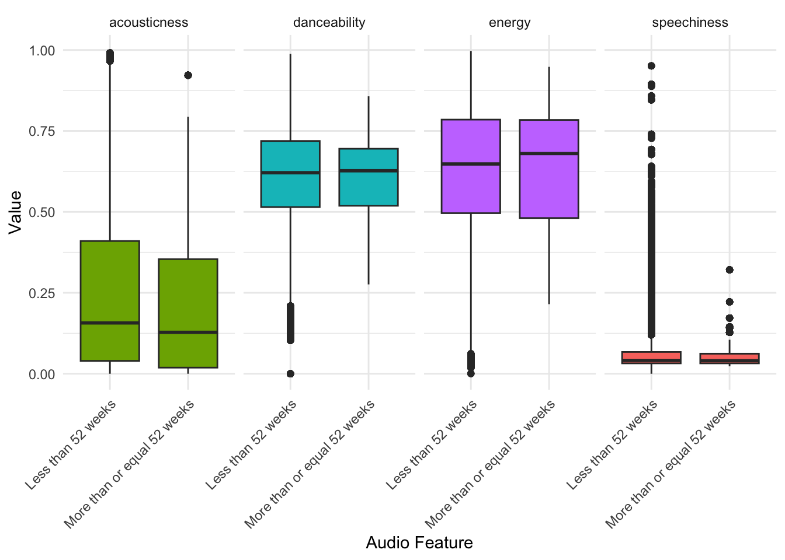

Uncovering the secret ingreidents behind those chart-toppers: a decade of music trends
People around the world loves music as they are enjoying to their favorite tracks 20.7 minutes each week on average which is almost a day! (Childs-Young 2023). This come to this question have you ever wondered what makes couple of songs like Radioactive by Imagine Dragons, stay on the billboard for so long? In this analysis, we dive deeply into the trend of Billboard’s top 100 songs over the past decade, exploring key audio features like energy and acousticness.
Data description
Before dig into an analysis, let’s talk about data sources that we will be using. There are two data sources for this analysis report both retrieved by @TidytuesdayData2021
Billboard’s top 100 chart songs: A standard record chart in the US for songs by weekly Billboard magazine including metric on the chart, we will mainly use this to determine weekly track position.
Spotify data: one of the most popular music streaming services, including each detail of the tracks, especially audio features which are the main metric for our analysis!
For detailed data dictionary for both data sources are provided in the data dictionary
Changing Trends in Audio Features on the Billboard Charts Throughout the 2010s: An analysis
This chart from Figure 1 demonstrates track features as measured by Spotify, one of the most popular music streaming service. Look at the billboard data from the 2010s, most features are pretty much the same through out the decade. However, four of them saw some significantly changes over the last decades. Acousticness, speechiness, and danceability were the three biggest winners, while energy features faced their biggest downside. These trend shift reflects how listeners’ preferences have changed over time.
Although taste in music is a subjective things and hard to generalize, many people use music to get moving which could explain the rise in danceability (“Music, Emotion, and Well-Being | Psychology Today Australia” n.d.). Despite a small drop in valence (measuring the the positivity of the track), emotional response can still be influenced by it, especially when it reaches to arousal levels (Hofbauer and Rodriguez 2023).
Another interesting aspect is the relationship between tracks that were able to stayed on the charts for a long time and other songs. By looking at the top 5 longest-running tracks in the 2010s in Table 1, these songs managed to stayed on the billboard for more than a year (52 weeks). For example, “Radioactive” by Imagine Dragons and “Sail” by AWOLNATION. The interesting thing is these top hit seems to have their similarity. They all have high energy (0.784 for “Radioactive”) and are pretty danceable (0.825 for “Sail”). Another common feature is their low acousticness, meaning they are more focused on music. This might help explain why they held onto their spots for so long.
| Song | Performer | acousticness | danceability | speechiness | energy | Weeks on chart |
|---|---|---|---|---|---|---|
| Radioactive | Imagine Dragons | 0.1060 | 0.448 | 0.0627 | 0.784 | 87 |
| Sail | AWOLNATION | 0.4520 | 0.825 | 0.0568 | 0.435 | 79 |
| Counting Stars | OneRepublic | 0.0654 | 0.664 | 0.0382 | 0.705 | 68 |
| Party Rock Anthem | LMFAO Featuring Lauren Bennett & GoonRock | 0.0189 | 0.750 | 0.1420 | 0.727 | 68 |
| Rolling In The Deep | Adele | 0.1310 | 0.729 | 0.0294 | 0.756 | 65 |
Looking at the bigger picture from Table 1, Figure 2 shows that long-lasting hits tend to have lower acousticness and higher energy, which aligns with what we have found earlier like “Radioactive”. While danceability and speechiness don’t seems to vary much between short and long lasting tracks, suggesting that they might not played a big role in terms of song’s chart duration. Instead, songs with more energy and a less acoustic tend to maintain on the chart longer. This highlights just how important these sound elements for long-term success.

Conclusion
To conclude, we analyzed Billboard’s top 100 songs over the past decade and found that long-lasting hits, like “Radioactive” and “Sail,” share key similar audio features such as higher energy and lower acousticness. To be more specific, the more energetic and less acoustic a song is, the more likely it is to stay popular. While danceability and speechiness don’t seem to make a big difference, energy and acousticness are like the secret sauce to a song’s longevity on the charts.
Appendix
Data dictionary
billboard dataset
| variable | variable | description |
|---|---|---|
| week_id | string | Direct identifier of the week of the Billboard. |
| song | string | Song name |
| performer | string | Performer name |
| song_id | string | Direct identifier of the song, concatenate of song and performer. |
| weeks_on_chart | double | Iteration of the week on the chart. |
audio_features dataset (For fourth to the ninth variable are an indicator ranging from 0.0 - 1.0)
| variable | variable | description |
|---|---|---|
| song_id | string | Direct identifier of the song, concatenate of song and performer. |
| song | string | Song name |
| spotify_genre | string | Genre of the song by Spotify |
| danceability | double | Describe how danceable the tracks are based on a combination of the various musical elements. |
| energy | double | Describe a measure of intensity and activity of the tracks based on perceptual features. |
| speechiness | double | Describe the occurrence of spoken words. |
| acousticness | double | Describe the acousticness of the track. |
| instrumentalness | double | Describe the instrumentalness of the track. The higher the value, the higher the portion of the instrument. |
| liveness | double | Describe the chance of the tracks that are live performances. |
| valence | double | Describe the positiveity of the track. Higher valence means higher positivity of the track. |
| spotify_track_popularity | double | Popularity of the track calculated by Spotify algorithm |
Reference
Childs-Young, Laura. 2023. “IFPI’s Global Study Finds We’re Listening to More Music in More Ways Than Ever.” IFPI. December 11, 2023. https://www.ifpi.org/ifpis-global-study-finds-were-listening-to-more-music-in-more-ways-than-ever/.
Hofbauer, Lena M., and Francisca S. Rodriguez. 2023. “Emotional Valence Perception in Music and Subjective Arousal: Experimental Validation of Stimuli.” International Journal of Psychology: Journal International De Psychologie 58 (5): 465–75. https://doi.org/10.1002/ijop.12922.
“Music, Emotion, and Well-Being | Psychology Today Australia.” n.d. Accessed September 5, 2024. https://www.psychologytoday.com/au/blog/science-choice/201908/music-emotion-and-well-being.